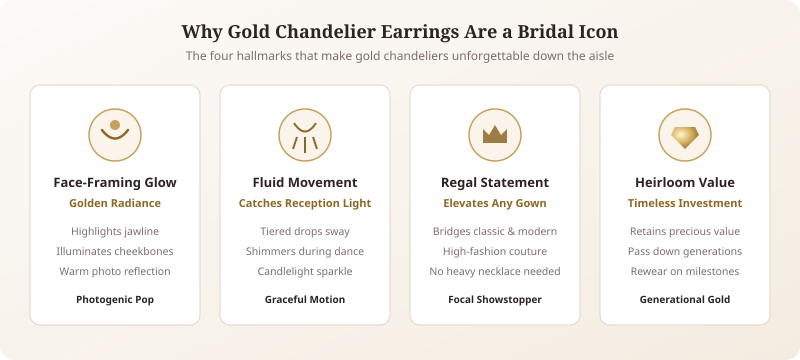
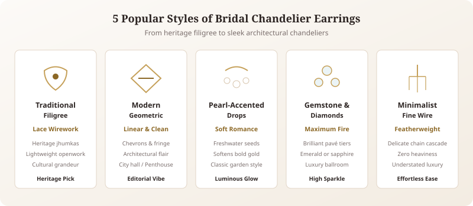
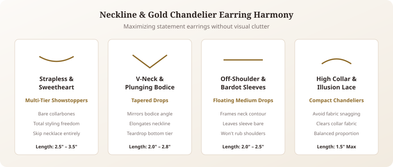
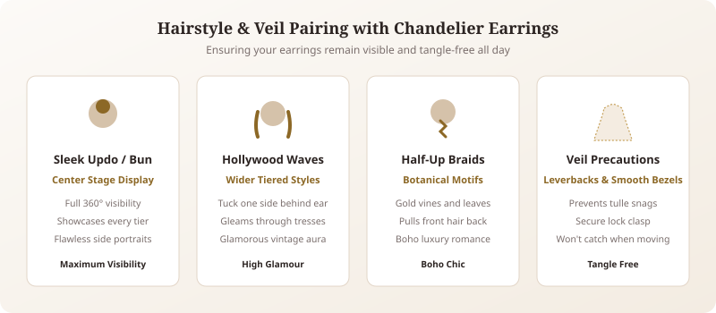
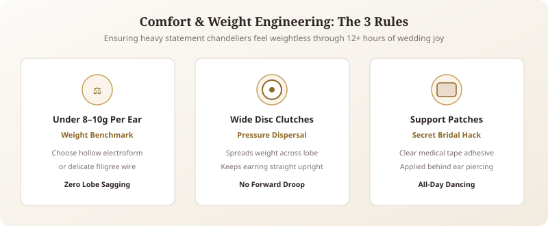
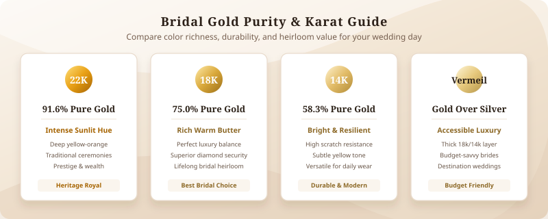
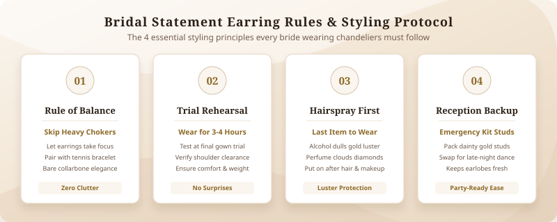
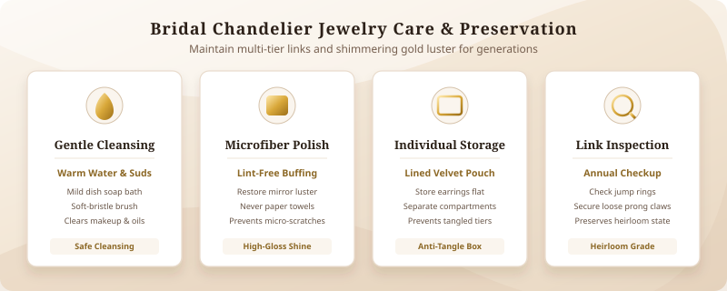
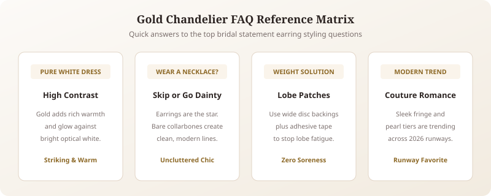
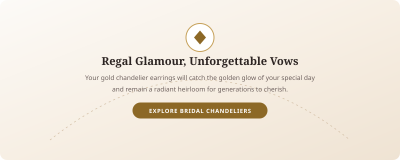

Your walk down the aisle is one of the most photographed moments of your life. Every detail matters, from the flow of your veil to the warm glow of your accessories. If you want jewelry that captures regal grace, motion, and unmistakable glamour, choosing a pair of gold chandelier earrings for bride ceremonies is an unbeatable choice.
Chandelier designs bring an organic, fluid sparkle that frames the face and illuminates your wedding-day radiance. Whether you are walking down a candlelit cathedral aisle, reciting vows in an intimate garden, or celebrating at a lavish cultural reception, gold bridal earrings add an unforgettable aura of romance and timeless grandeur. In this comprehensive guide, we explore how to choose the right style, match your neckline, ensure all-day comfort, and style your statement pieces with effortless perfection.
Why Gold Chandelier Earrings Are a Bridal Favorite

For centuries, gold jewelry has symbolized wealth, prosperity, and everlasting devotion across cultures worldwide. When combined with the dramatic silhouette of a chandelier, it becomes pure bridal magic.
- Face-Framing Radiance: Unlike small studs that can get lost in photographs, chandelier earrings cascade along the jawline. The warm reflection of yellow or rose gold casts a flattering, sunlit glow directly onto your cheeks and collarbones.
- Movement and Light Capture: As you turn to exchange vows or sway during your first dance, tiered drops swing gently with your rhythm, catching both natural sunlight and atmospheric reception candles.
- Versatility Across Wedding Themes: Gold pairs seamlessly with everything from minimalist silk crepe slips to heavy, hand-embroidered heritage lehengas and lace ballgowns.
- Cherished Heirloom Quality: High-quality bridal chandelier earrings do not lose their beauty after the cake is cut. They become treasured family keepsakes that can be passed down to daughters, sisters, or future generations.
Key Bridal Takeaway
- Gold chandeliers draw focus upward to your smiling expression, ensuring you look captivating in every camera angle.
- Intricate tier designs catch ambient light dynamically as you move, giving you cinematic sparkle.
Popular Styles of Bridal Chandelier Earrings

Chandelier earrings are not one-size-fits-all. Jewelers craft these showstoppers in a range of silhouettes to match different tastes and aesthetics.
1. Traditional Filigree and Jhumka Chandeliers
For traditional and cultural ceremonies, traditional gold chandelier earrings feature intricate lace-like openwork (filigree), delicate granulation, and tiered bell drops. These designs honor age-old artisan craftsmanship and provide dramatic volume without excessive solid metal weight.
2. Modern Geometric Chandeliers
Brides who love clean architecture will appreciate modern interpretations. These designs use sleek gold wires, sharp chevron tiers, open trapezoids, and polished gold fringe. They make a confident, editorial statement for modern penthouse or city hall weddings.
3. Pearl-Accented Drops
Pairing warm gold with milky freshwater or seed pearls creates a dreamy, romantic finish. Petite pearl clusters hanging from each gold branch add movement while softening the bolder presence of yellow gold.
4. Gemstone and Diamond Clusters
If you want light-reflecting fire alongside gold's rich hue, look for chandeliers set with brilliant diamonds, moissanite, or cubic zirconia. For colorful touches, accents like emeralds, sapphires, or morganite bring personal symbolism to your palette.
5. Minimalist Fine-Wire Chandeliers
If you love the cascading shape of a chandelier but prefer a featherweight aesthetic, minimalist wire chandeliers feature delicate dangling chains and micro-charms. Explore our curated [dainty bridal jewelry guide] for subtle ways to embrace movement.
How to Match Gold Chandelier Earrings for Bride with Your Neckline

Because statement earrings for wedding days draw instant visual focus to your upper body, coordinating them with your dress neckline ensures your overall look feels balanced and deliberate.
- Strapless and Sweetheart: Bare shoulders and an open décolletage provide the ultimate blank canvas. You can wear long, multi-tiered chandeliers without any visual competition. Pair them with bare collarbones or a barely-there pendant.
- V-Neck and Plunging: A V-neck draws the eyes downward. Opt for tapered chandelier earrings that end in a defined point or single teardrop drop, echoing the flattering linear silhouette of your dress.
- Off-the-Shoulder and Bardot: These romantic necklines showcase your neck and shoulder curve. Medium-length chandeliers (2 to 2.5 inches) frame the collar without brushing against the gown's sleeves.
- High Neck and Illusion Collars: If your gown has a mock turtleneck, halter strap, or heavy lace applique around the throat, long multi-tiered chandeliers can tangle with the fabric. In this case, choose a shorter, compact chandelier or read our guide on [wedding dress neckline jewelry pairing] to find the right harmony.
Matching Earrings with Your Bridal Hairstyle and Veil

Your wedding hairstyle determines how prominently your earrings display and prevents snags during the ceremony.
Elegant Updos and Sleek Buns
High buns, soft textured chignons, and sleek French twists give chandelier earrings center stage. Because the neck and ears remain unobstructed, every tiered drop and sparkling accent is completely visible in portraits from every angle.
Romantic Hollywood Waves and Down-Dos
Wearing your hair down in voluminous waves creates a luxurious, vintage-inspired mood. To ensure your earrings don't disappear behind loose strands, choose wider chandeliers or pieces with faceted gemstones that reflect light through your tresses.
Half-Up Braids and Boho Waves
Half-up styles draw side hair away from the face while maintaining length in the back. Pair this relaxed, whimsical hairstyle with botanical-inspired gold chandeliers featuring leaf and vine motifs.
Veil Considerations
When selecting your veil, examine the construction of your earrings. Avoid rough, exposed prong settings or open, unclasped wire loops that can hook into delicate bridal illusion tulle. Choose leverback closures and smooth bezels for stress-free movement.
Choosing the Right Length and Weight for All-Day Comfort

Nothing ruins wedding joy faster than sore, throbbing earlobes by hour three of your celebration. Because chandelier earrings are larger than studs, weight and balance are essential factors.
- Weight Distribution: The ideal bridal chandelier should weigh under 7 to 10 grams per earring. Look for earrings crafted using electroforming, hollow gold stamping, or filigree wirework, which maximize surface area while remaining surprisingly light.
- Finding the Flattering Length: Most flattering bridal chandeliers measure between 1.75 and 3 inches. Measure the distance between your earlobe and the top of your shoulder to ensure the earring floats freely without resting on your collarbone.
- Supportive Earring Backs: Standard small butterfly friction backs can cause heavy earrings to droop forward. Upgrade to wide disc clutch backings or silicone stabilizing pads to distribute the weight evenly across your earlobe.
- Earlobe Support Patches: Invisible adhesive support patches placed behind the earlobe take pressure off the piercing hole, preventing sagging and discomfort throughout 12+ hours of celebration.
Gold Purity Guide: 22k, 18k, 14k, and Gold-Plated

Understanding gold hallmarks helps you balance rich color saturation, metal durability, and your bridal budget when shopping for wedding earrings for brides.
| Gold Type | Purity Percentage | Tone & Appearance | Best For |
|---|---|---|---|
| 22k Gold | 91.6% Pure Gold | Deep, rich, intense yellow-orange | Traditional South Asian and Middle Eastern bridal wear |
| 18k Gold | 75.0% Pure Gold | Warm, rich, classic buttery gold | Luxury fine jewelry, diamond settings, lifelong heirlooms |
| 14k Gold | 58.3% Pure Gold | Subtle, bright, versatile yellow | Modern durability, scratch resistance, daily wear |
| Gold Vermeil / Plated | Heavy gold over sterling silver | Beautiful gold surface at an accessible price | Budget-savvy brides, destination ceremonies |
For brides with sensitive skin, solid 14k or 18k gold is highly recommended because it is naturally hypoallergenic and free from reactive base alloys like nickel.
Bridal Styling Tips and Common Mistakes to Avoid

When wearing a statement accessory, thoughtful styling ensures you look polished rather than overdone.
- Follow the Rule of Balance: Chandelier earrings are a focal piece. If you choose dramatic earrings, skip the heavy bib necklace and let your décolletage remain bare, or pair them with a slender tennis bracelet and your engagement ring.
- Conduct a Dress Rehearsal: Wear your earrings for three to four hours during your final gown fitting and hair trial. This confirms they do not snag your gown's shoulder lace or feel too heavy.
- Apply Hairspray First: Aerosol hairsprays, styling mousses, and perfumes contain alcohol and chemicals that create a dull film over gold and gemstones. Always put your earrings on as the very last step of bridal preparation.
- Pack a Backup Pair: Keep a pair of comfortable gold studs in your bridal emergency kit. If you plan to dance energetically late into the reception, you can easily swap into simpler studs after formal photography ends. Check out our [bridal jewelry care tips] for keeping your pieces shining all night.
Where to Buy and How to Care for Your Earrings

Whether you purchase your bridal earrings from an independent artisanal jeweler, a luxury boutique, or an estate vintage dealer, proper care preserves their sparkle.
- Check the Clasps: Ensure chandeliers have secure leverbacks, locking French wires, or heavy-duty screw backs to prevent an accidental loss on the dance floor.
- Cleaning Before the Big Day: Soak your gold earrings in warm water mixed with a few drops of mild dish soap for ten minutes. Gently clean behind stone settings with a soft-bristled baby toothbrush, rinse in clean water, and dry with a lint-free microfiber cloth.
- Proper Storage: Store chandelier earrings flat in individual velvet-lined compartments. Hanging or tossing them together into a pouch can bend delicate link pins and cause tiers to tangle.
Frequently Asked Questions

Can I wear gold chandelier earrings if my wedding gown is pure white?
Yes. While silver and platinum are traditional with bright optical white, warm yellow and champagne gold create a striking, high-contrast look that brings warmth to your complexion. Warm gold also pairs effortlessly with ivory, off-white, and champagne bridal gowns.
Should I wear a necklace with chandelier earrings?
In most cases, it is best to skip the necklace. Chandelier earrings create plenty of drama around your jaw and neck. Leaving your collarbones bare keeps your look modern, clean, and uncluttered. If you want neck jewelry, choose a minimal floating pendant on an ultra-fine chain.
How do I prevent heavy chandelier earrings from hurting my ears?
Choose hollow or filigree designs under 10 grams, use wide plastic disc backings to distribute pressure, and apply adhesive earlobe support patches behind the piercing hole before inserting the earring post.
Are chandelier earrings out of style for modern weddings?
Not at all. Chandelier earrings are a timeless classic that continuously evolves. Modern brides embrace sleek, architectural silhouettes, fluid fringe drops, and organic baroque pearl accents that feel distinctly contemporary and fashion-forward.
Conclusion

Your wedding day is an extraordinary celebration of your unique love story and personal style. Selecting the perfect gold chandelier earrings for bride looks allows you to make an unforgettable entrance with jewelry that feels regal, luminous, and authentically you. By selecting a silhouette that complements your gown's neckline, harmonizing your metal tones, and prioritizing lightweight comfort, you will radiate confidence from your first step down the aisle to the final dance. Explore our handcrafted collections today to find the statement pair that will illuminate your special day.
Explore More Bridal Earring Collections
Ready to explore further earring inspiration? Discover our companion bridal guides: